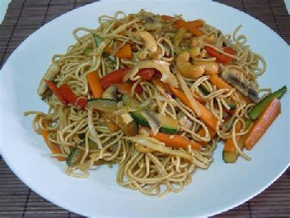

Tallarines

Plato de Tallarines
Para preparar este plato se necesita mucha dedicación y amor por la cocina
Ingredientes
- Harina
- Agua
- Sal
- Aceite
- Pimenton
- Tomatitos
Pasos
- Espolvorear
- Agregar Agua
- Agregar Aceite
- Unir
- Salpimentar
- Armar tiras de tallarines
- Hervir